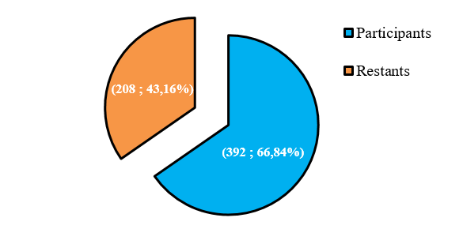
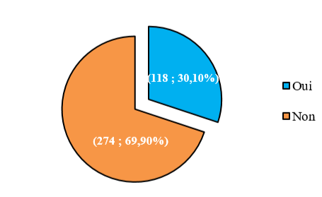
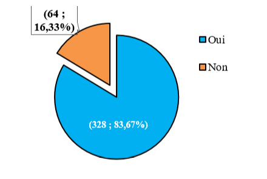
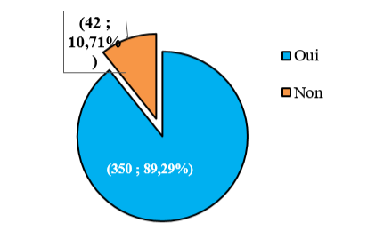
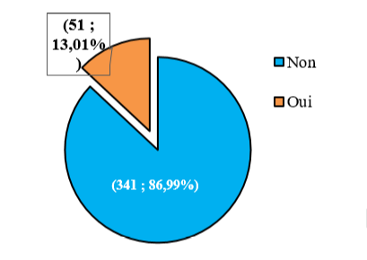
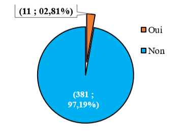

Les MNT figurent dans les principaux problèmes majeurs de santé
publique dans le monde en l’occurrence dans les pays pauvres
dont le Bénin. Afin d’apporter sa pierre dans la lutte contre
ces pathologies chroniques, la Clinique Divine Miséricorde
d’Abomey-Calavi en collaboration avec la FDM a organisé une
campagne de sensibilisation et de dépistage gratuit de la
population d’Abomey-Calavi.
Plusieurs activités étaient menées,
afin de contribuer à la réussite du projet et l’atteinte des
résultats attendus. Au nombre de ces activités préparatoires
figurent la diffusion par les mass médias les annonces
radiophoniques, les prospections sur des sites stratégiques à
travers la distribution des flyers et la pose des affiches de
grand format sur les murs dans les grands lieux de rassemblement
tels que les arrondissements, la Mairie, les confections
religieuses, les sites de rassemblement des conducteurs de
taxi-motos, etc.., Pour la réussite de l’évènement, la FDM a
doté la CDM-AC des tensiomètres pour la prise de la pression
artérielle des participants.
Au total, 392 personnes ont
participé à cette campagne de dépistage, soit 65,33% du nombre
de participants attendus. Le graphe ci-dessous illustre ces
informations.

Figure 1 : Point du niveau de réalisation en fonction du nombre
de participants attendus à la campagne de dépistage (N = 600).
Présentation des participants à la campagne de dépistage
◆ Caractéristiques socio-démographiques
La plupart des
participants étaient venus de la commune d’Abomey-Calavi (354 ;
90,31%). La majorité des participants à cette campagne de
dépistage étaient des hommes (262 ; 66,84%) et aucun transgenre
n’était enregistré. Le sex-ratio en faveur des hommes était
2,01. De plus, l’âge moyen était 41,67 ± 13,59 ans avec des
extrêmes de 18ans et 77 ans. La tranche d’âge la plus dominante
était celle de plus de 50 ans (113 ; 28,83%). Le tableau
ci-dessous expose amplement ces statistiques.
Tableau I :
Répartition des participants reçus selon leurs caractéristiques
socio-démographiques (n=392)

◆ Avoir déjà participé au moins une fois à ces campagnes de dépistage
Plus de la moitié des participants affirmaient qu’ils n’avaient
jamais participé à ces genres de campagnes. Le graphe ci-dessous
expose cette répartition.

Figure 2 : Répartition des
participants à la campagne de dépistage selon leurs
participations au moins une fois à ces campagnes de dépistage (N
= 392)
Point du dépistage effectué
◆ Suspicion de l’hypertension artérielle
Lors de cette campagne de dépistage, 64 participants
avaient des chiffres tensionnels élevés, soit une prévalence de
16,33%. Le graphe ci-dessous illustre cette statistique.

Figure 3 : Répartition des participants selon la suspicion de l’HTA (N
= 392)
◆ Suspicion du diabète
Lors de cette campagne de
dépistage, 42 participants présentaient un taux de glycémie
élevé, soit une prévalence de 10,71%. Le graphe ci-dessous
illustre cette statistique.

Figure 4 : Répartition des
participants selon la suspicion du diabète (N = 392)
◆ Suspicion de l’obésité
Lors de cette campagne de dépistage, 51
participants avaient un indice de masse corporelle (IMC)
supérieure à 40, soit une prévalence de 13,01%. Le graphe
ci-dessous illustre cette statistique.

Figure 5 Répartition
des participants selon la suspicion de l’obésité (N = 392)
◆ Suspicion de l’insuffisance rénale
Après les analyses
biomédicales au niveau du laboratoire, 11 participants
présentaient un taux d’urée et créatinémie élevé et étaient
susceptibles d’une insuffisance rénale, soit une prévalence de
02,81%. Le graphe ci-dessous illustre ces informations.

Quelques images de l'activité